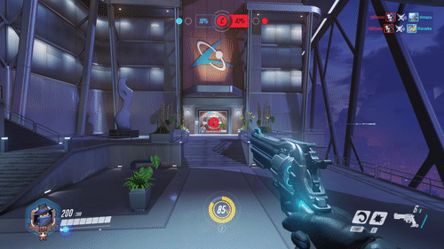

Description
In the near future of our world, an uprising of artificially intelligent robots led the United Nations to form Overwatch, an international task force of the best and brightest "scientists, soldiers, adventurers, and oddities" in order to combat the threat. After the war, Overwatch was dedicated to peacekeeping and scientific progress, and became a symbol of hope around the world. However, many years of controversy and waning influence came to a head when the UN launched an investigation into alleged human rights violations, which was shortly thereafter followed by an explosion that claimed Overwatch HQ and the lives of two of its most prominent members. This led to the disbanding of the organization. Now a number of heroes from a variety of organizations and walks of life have come together to fill the void Overwatch left.
Game Categories
- Genre:
- Action, Shooter, Multiplayer
- Perspective:
- 1st- person
- Gameplay:
- shooter